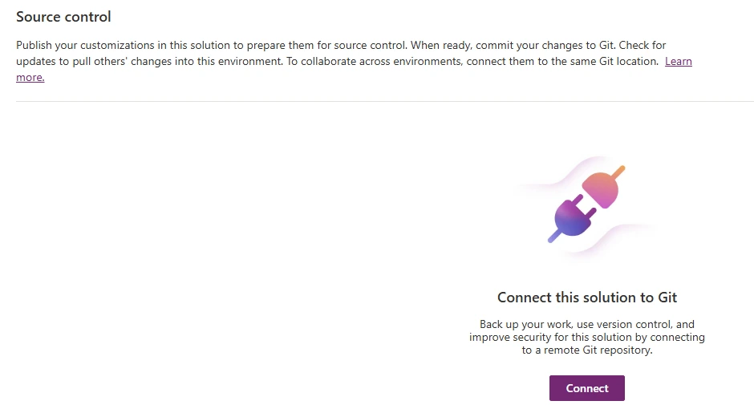

- Power Automate
- Level 10 · Enterprise ALM and admin · 3 of 6
Source control with Git and the Power Platform CLI
A solution zip is one file you can't compare. Source control turns it into readable files in Git, so you can see what changed, review it and rebuild any version.
Two ways in
WhatGit integration in the maker portal, or export/unpack with
pac.WhyHistory, reviews and rollback for low-code work.
DemoA solution committed to a repository folder.
Which way?
Who works on it?
Makers, no command line
Git integration: Source control in the solution
Developers / pipelines
pac CLI: export, unpack, commit

The pac loop
Each change
pac solution exportpac solution unpack --packagetype BothReview the Git diff (each flow is a JSON file)
Commit
Later:
pac solution pack --packagetype Managed# sign in once per environment (opens a browser sign-in)
pac auth create --environment https://contoso-dev.crm.dynamics.com
# export the unmanaged solution from development
pac solution export --name ContosoRequests --path ./out/ContosoRequests.zip
# unpack it into readable files for Git
pac solution unpack --zipfile ./out/ContosoRequests.zip --folder ./src/ContosoRequests --packagetype Both
# later: pack the folder back into a managed zip for test or production
pac solution pack --zipfile ./out/ContosoRequests_managed.zip --folder ./src/ContosoRequests --packagetype ManagedDifferent values per environment
Deployment settings file
pac solution create-settings → templateFill values per target (test.settings.json, prod.settings.json)
pac solution import --settings-file …: connections and variables set on importpac solution create-settings --solution-zip ./out/ContosoRequests.zip --settings-file ./deploy/test.settings.json
pac solution import --path ./out/ContosoRequests_managed.zip --settings-file ./deploy/test.settings.json --environment https://contoso-test.crm.dynamics.com{
"EnvironmentVariables": [
{ "SchemaName": "contoso_RequestsSiteUrl", "Value": "https://contoso.sharepoint.com/sites/Requests-Test" }
],
"ConnectionReferences": [
{
"LogicalName": "contoso_sharepoint",
"ConnectionId": "<connection id in the test environment>",
"ConnectorId": "/providers/Microsoft.PowerApps/apis/shared_sharepointonline"
}
]
}Keep secrets out of the file; use the pipeline's secret store.
New to this? Start from the basics optional
Git: records every version of a set of files.
Commit: a saved snapshot with a message.
Common mistakes
- Committing the zip instead of unpacked files.
- Production connection IDs or secrets in the repo.
- Several people in one shared Dev environment.